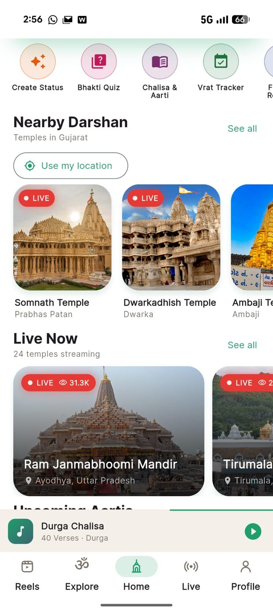
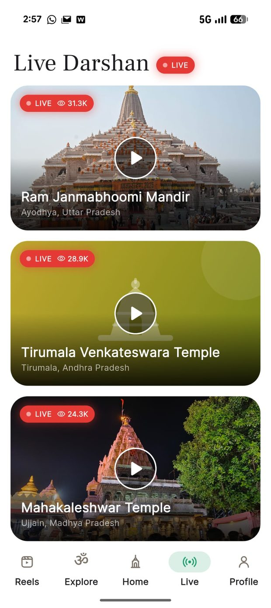
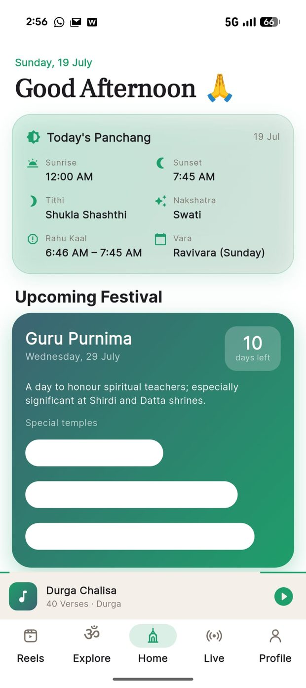
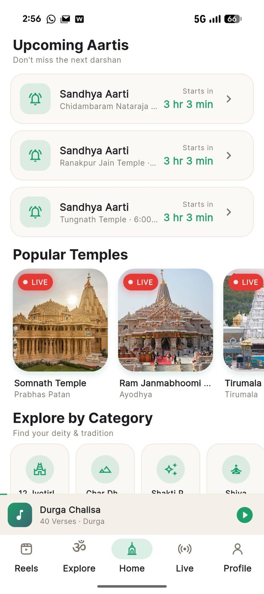
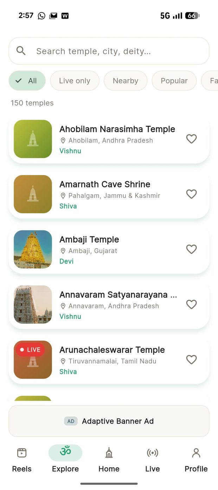
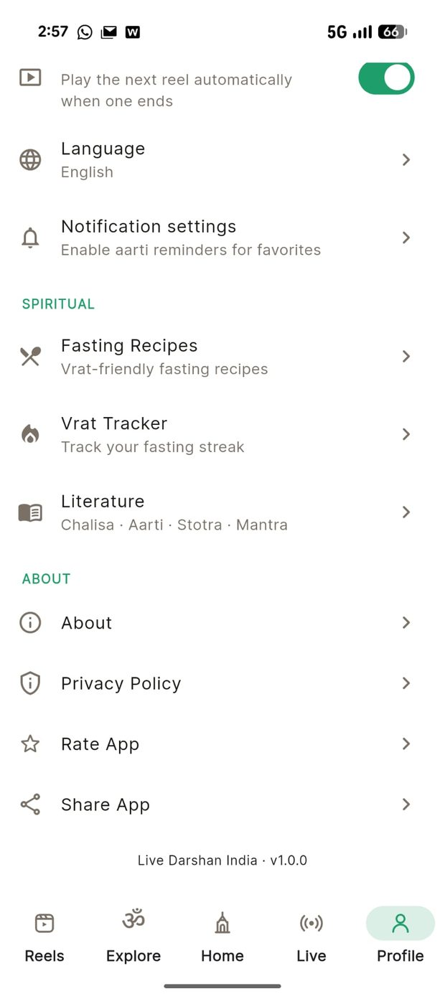

Live darshan from 150+ temples across India, with today's panchang, aarti reminders, festival countdowns, and a library of chalisa, aarti, stotra and mantra — all in one free app.


Built for devotees who want the temple close by, whatever the distance.
Watch aarti and darshan as it happens, from Ram Janmabhoomi to Tirumala to Mahakaleshwar.
Sunrise, sunset, tithi, nakshatra, vara and rahu kaal — refreshed every morning.
See which aartis are coming up and get a reminder before your favourite temple begins.
Read and listen to chalisa, aarti, stotra and mantra with a built-in verse player.
Upcoming festivals with the temples where each is celebrated most beautifully.
Keep your fasting streak and find vrat-friendly recipes for fasting days.
Short devotional clips, plus create a bhakti status to share with family.
Save the temples you visit most. Light, dark, and five accent colours to choose from.
Swipe through the app.




Filter by live, nearby, popular or favourites — or explore by deity and tradition.
Ayodhya, Uttar Pradesh
Prabhas Patan, Gujarat
Tirumala, Andhra Pradesh
Ujjain, Madhya Pradesh
Dwarka, Gujarat
Ambaji, Gujarat
Tiruvannamalai, Tamil Nadu
Pahalgam, Jammu & Kashmir
We don't host or re-stream any video. Every live darshan you watch in the app is the temple's own official YouTube stream, played through YouTube. All rights in those broadcasts remain with the respective temple trusts and with YouTube/Google.
Devotional texts in the Literature section are public domain or openly licensed, with the source credited. If you believe something has been included in error, tell us and we'll remove it.
No account, no password. Open the app and start.
Streams play from the temples' official channels.
"Nearby" only works if you choose to allow it.
Read exactly what the app does and doesn't do.